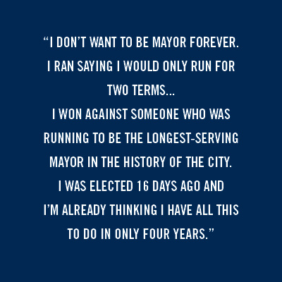

Bynum through the storm
An exclusive interview with Tulsa Mayor-elect G.T. Bynum

Mayor-elect G.T. Bynum
Melissa Lukenbaugh
G.T. Bynum looks even younger than 38, if that's possible, when he arrives for our lunch meeting at The Rusty Crane on a Thursday, shortly before torrential rains and tornado sirens envelope downtown. His smile is broad; his glasses, Annie Hall-ish. He looks like your classmate who made money tutoring in graduate school; your co-worker who's now your boss.
“Hi, I'm G.T."
We're on a first-name basis with our mayors in Tulsa—Dewey, Bill, Kathy, now G.T.—and they with us.
“'Mr. Mayor,' you'll have to get used to that,” I tell him. On June 28, Bynum beat incumbent Dewey Bartlett by 18 percent.
“My campaign staff used to mock me with that during the campaign,” he laughs.
TTV: So, did you really think you were going to win?
GTB: The best advice I ever got on campaigns—when I first ran for the city council—I met with [former First District Congressman] John Sullivan and he said that what you have to do is build people up around you who steady you, because it’s a rollercoaster and you’ll be thinking you’re bulletproof and the next day you’ll think there’s no way you can win. I’m a big believer in visualizing and so throughout the whole campaign, I visualized what it would be like to win. And the last weekend of the campaign, they had me out, knocking on doors, that Dewey had carried 9-1 against Kathy [Taylor] last time, and most people said they were going to vote for me. So, I thought, “These people are just being polite or we’re doing really well in a part of town—far South Tulsa—that we thought we were really weak in.”
TTV: About six months ago, I was having bagels with OK Policy Institute Director David Blatt, and we couldn’t see a scenario where Bartlett wins. You would carry Democrats, which you did, and then you’d pick up a small portion of Republicans, which you did. And that’s what happened. And almost everyone missed it. SoonerPoll, The Tulsa World.
GTB: I have to tell you, I heard you on a podcast saying that and thought, “Oh, no, he knows our strategy.” (Laughing) That was the thing and what was frustrating for us was the SoonerPoll, in particular, didn’t reflect what we were feeling. I was out doing events, all day every day for three months, and it always felt positive. It didn’t feel like it was that close. Now, we knew beating any incumbent in a partisan primary was going to be tough, but when the filing date past and and no big name Democrats—
TTV: We have big name Democrats?
GTB: People like Susan Savage, Karen Keith and Kathy Taylor might have filed, but we wanted to get their support early on and we did—and this was back in January—so when nobody filed, we knew we could run basically the same campaign that Blake Ewing ran when Mayor Bartlett’s campaign manager ran against him two years ago. Blake’s a Republican, but he works with Democrats, he works with Republicans, and he won huge, so that was our strategy as well.
TTV: You got support from gay and lesbian groups, women, liberals. There’s an affiliation with you, almost an affection. You also stayed away from national, contentious issues—Trump, for one. Was that a conscious decision?
GTB: It was, in that I really wanted to redefine the notion of the mayor being a partisan office and to being more service focused. The mayor doesn’t have anything to do with the presidential race or immigration policy or anything like that. I will say I think of myself as a conservative, but it’s in the Barry Goldwater school of conservatism, which is about minimizing government intervention in people’s private lives. People ought to be able to do what they want up until the point it hurts somebody else.
TTV: Michael Whelan, former Tulsa Democratic County party chair, said you have to give people something tangible to get them to get to the polls. To that extent, you could have motivated and mollified a lot of people on the right if you gave them your support on gay marriage bans and bathroom bills, but you didn’t.
GTB: That, to me, is not an issue to be involved in a campaign, let alone how it doesn’t gel with my personal beliefs.
TTV: That’s what you told [conservative blogger] Michael Bates when he disagreed years back with your support of the city’s human resources anti-discrimination policy.
GTB: There’s a group of conservatives who do not like me because I’m not anti-gay. Michael Bates—and he and I agree on a whole lot of stuff—but he will never forgive me for not hating gay people. But the notion of conservatism has changed from when Barry Goldwater was talking about it to what some people characterize it as today. There are a lot of conservatives who are not going to be vocal on sexual orientation issues, but believe strongly in efficient government. And, stylistically, my wife and I decided we wanted to run a campaign for the kind of candidate we would like to vote for. But I will say, regardless of the messenger, I try to detach myself from the emotional reaction and listen to what it is they are saying, so if Michael Bates has a good idea, and my analysis of it is something we ought to do, I’m going to work on that just as soon as I would if David Blatt has one. I haven’t allowed myself to fall into a trap, which I very easily could fall into, of letting resentment override my judgment.
TTV: Do you think the Trump endorsement hurt Bartlett?
GTB: Oh, yeah. It hurt him with Republicans and with the Hispanic community, the fastest growing population in the city. That being said, there were Democrats upset with me that I wouldn’t publicly say who I was going to vote for president. I do think more people were mad at him for endorsing Trump than at me for staying out of it.
(The owner of the restaurant, Lee Brennan, has just brought his daughter over for a picture, for which the mayor-elect gladly poses.)
TTV: Bartlett won in part four years ago because voters liked him more than Kathy Taylor, but this election, you welcomed the association with her.
GTB: Couple of things. And it kind of backs up what you were saying. Great statistic we were aware of—and they were clearly not—was that amongst undecided voters, Kathy Taylor had a 65 percent approval rating. I mean, they [The Bartlett campaign] kept sending out mail pieces—nice pieces—pictures of Kathy and me to Democrats, as well as Republicans. They did a lot of work for us. We also committed early on to run a positive campaign. It wasn’t entirely altruistic. When you have two candidates tearing each other down, neither candidate gives them a reason to vote for them, voters are turned off. Let Dewey say whatever he wanted to say and just stay out of it. Of course three days after we decided that (laughing) I thought, “I’ve made a terrible mistake. We should have gone negative. He’s defined me, I haven’t defined him.” Turned out that he had defined himself by running such a negative campaign.
TTV: Were you aware of the optics, the contrast of a 38-year-old versus a 69-year-old?
GTB: (Laughing) That... no. Probably because I’m not an egomaniac. But he tried to use the age thing—that I’m naive. I look even younger than I am—I have the baby face—so my team said I was not allowed to leave the house for six months without a suit and tie on. But the day after the election, first thing I did was put on my jeans and Birkenstocks and went out for breakfast.
TTV: There was that SoonerPoll—again, who knows about its veracity—that asked Tulsans if they were satisfied? Almost 58% said yes. For an incumbent mayor not to ride that is surprising, no?
GTB: But here’s the thing with that. There’s a clear difference in interpretation. They took the approach that people are satisfied and therefore people will re-elect the mayor. We took the approach that just because people are satisfied doesn’t mean they don’t want something better.
TTV: But again the optics: the city, apparently, wanted someone like you—vibrant, young.
GTB: I heard a lot about that since the election. I never heard it during the campaign.
TTV: Never?
GTB: Yeah. What I heard was it’s time for new blood, which is a term that always creeps me out.
TTV: Your grandfather, Robert LaFortune, was mayor, your cousin, Bill LaFortune, was as well. Bartlett’s father was senator and governor. This wasn’t David and Goliath. This was LaFortunes and Bartletts—this was Goliath and Goliath.
GTB: Dewey and I both come from families that have been active in public service, yes. His dad and my grandfather were friends for years, so we have similar backgrounds, but I had a much more specific agenda.
TTV: Like?
GTB: Closing the 12-year life expectancy between north Tulsa and south Tulsa. I want to work on our working relationship with the county and with the schools. I was in the council for eight years.
TTV: Yet, you won in a landslide and nobody voted. 28 percent?
GTB: It had been projected as low as 15 percent and we were horrified by that because the fear is, the lower the turnout, the better for the incumbent. He had better name ID than I did. I felt good, though, regardless of turnout—our supporters were energetic.
TTV: Has Tulsa—or Tulsans—changed?
GTB: We used to have a set of standards here in Tulsa where people expected us to be world class. Maybe not in everything but a handful of things. I feel in the past decade or so we got comfortable with all the big companies moving out of town. I hate that mentality. We just can’t do that anymore. We need someone to push back against that. I think that resonated with young professionals who, usually, are not that political.
TTV: Do companies leave Oklahoma, leave Tulsa, because of a perception of the place—of one that’s inhospitable to gays, women, minorities?
GTB: Absolutely.
TTV: Was that on your mind when you announced?
GTB: When we first started, there was a self-centered mindset about it. I own my own business, I’m on the council—if I lose, well, okay—but I still have my family, my friends, so the potential risk was not as great as some make it out to be. Well, the last month, there were so many people saying, “I really view this race as a referendum and if you don’t win, I can’t imagine myself staying here.” It was like “Oh my God! What’s all this pressure all of a sudden?” That was the most gratifying thing about winning—that people wanted something more.
TTV: You got the backing of Bernie supporters, yet you worked for Senator Nickles, you worked for Senator Coburn, you said some nice things about Attorney General Scott Pruitt—
GTB: I have to push back against something you said earlier, that I won the Democrats and a sliver of Republicans. The reality is we believe I won a majority of the Republicans as well. We won more handily among Democrats, but I don’t think it was all divided along partisan lines. The other thing is we had the statewide co-chair of Donald Trump’s presidential campaign, Dan Keating, on our steering committee, but then we also had Sharon King Davis, who’s as pro-Hillary as anyone out there.

TTV: You’ve been on the city council long enough to see the changing dynamics. Are the relationships better, than, say, four years ago?
GTB: It’s interesting. It’s better publicly. This group does a better job of keeping their frustrations private, but the frustrations are still there. We didn’t have a single councilor who served with Mayor Bartlett endorse him, including from the current councilors who, a lot of them, were elected to work with him. I don’t want to be overly critical of someone I just beat in an election.
TTV: If not now, when?
GTB: (Laughing) The approach of the last several years has been if you don’t do anything, people can’t criticize you, so if you’re working on the largest capital program in history, have the council take care of it, as long as he can share in the credit at the end. Same with Vision, same with Public Safety, which was his biggest thing, but he really let [District 5 Councilor] Karen Gilbert do the work on it.
TTV: But Tulsa is sort of two minds here, both wanting a strong decisive mayor and yet wanting someone who will work with others.
GTB: Yeah.
TTV: So, fair to say Kathy Taylor got the ballpark built?
GTB: Oh, yeah.
TTV: Fair to say Dewey Bartlett would not have gotten the ballpark built?
GTB: (Hesitates) Yes… Yes.
TTV: But the criticism of her was she was a micromanager, autocratic, wouldn’t listen, didn’t know how to work a room.
GTB: That was not my experience with her. Funny thing about my relationship with her, remember, I got elected two years after she beat my cousin [Bill LaFortune]. I was afraid she was going to make my life hell, but we got along just fine, right out of the gate.
TTV: Thing is, nobody works a room better than Dewey Bartlett?
GTB: Correct. Yes. He is fantastic one on one.
TTV: That’s another reason the size of your victory was surprising, because he connects with so many people. He’s been to every church in the city … like four times.
GTB: What we noticed in a poll we did back in December—and we did it to make sure I wasn’t walking into a buzzsaw—was his personal approval ratings were in the sixties, but his re-elect numbers were in the high twenties.
TTV: What did that say to you?
GTB: People liked him but were ready for a change. That was the difference. When Kathy ran against Bill, people were “I like Bill, he’s a great guy, but it’s time for a change,” but when she ran against Dewey, it was so much more acrimonious. We decided early on not to get personal because people liked Dewey. If we do that, we thought, we’ll lose.
TTV: To that end, did you win or did he lose?
GTB: (Laughing) Well, I’m always going to think I won, but with that margin, probably both.
TTV: How does all this feel?
GTB: The best thing about being mayor, former [deceased] Mayor Jim Hewgley once told me, is that, “Forty years after being mayor, people still call me ‘Mayor.’”
TTV: You’re a moderate, but that only works because in Tulsa, there are GOP moderates. G.T. Bynum, moderate U.S. Congressman, is a lonely guy.
GTB: Right. It doesn’t work there. When I worked for Senator Nickles, he was still working on bills from when he first got there, 19 years earlier, whereas when I was with Bill, he said “We’re going to have a Vision Summit” and then three years later the BOK is under construction. The velocity of change is so much greater at the local level. Nationally, it’s philosophical. Locally, it’s tangible.
TTV: A little bit on the relationship with the sheriff’s office. What would you have done when Eric Harris was shot by a sheriff’s deputy?
GTB: They were conducting a sting operation inside Tulsa city limits. Why was the sheriff’s office doing that?
TTV: What was the answer to that?
GTB: I never got an answer.
TTV: On your age: you’re young.
GTB: I am uniquely placed and have been incredibly lucky. There’s a lot I need to learn, no question, but I’m aware. Also, I am mindful one of the most successful mayors we ever had, Jim Maxwell, was 31 when he got elected [1958-66]. The key is to surround yourself with good people and not get arrogant.
TTV: Did you ever sit in meetings with the mayor and think, “I can do a better job here”?
GTB: Well, I wouldn’t have run if I didn’t think I could do the job better. But my biggest hurdle in running against him was that I grew up looking up to him.
TTV: Really?
GTB: The first campaign I ever worked on was his race for the city council in the seat I now have. His parents lived next door to me when I was a kid. His dad was my grandfather’s political mentor. We have similar backgrounds. When he ran for mayor, successfully, seven years ago, I was on the steering committee for his campaign. I was one of five people on his transition team, so, yes, it was a personal difficulty.
(The rains come down hard. Tornado sirens sound. The mayor-elect has a meeting at 1 p.m. back at City Hall, but that’s clearly not going to happen; we aren’t going anywhere for a while.)
TTV: In your acceptance speech, you said you liked him before the campaign, you like him now.
GTB: When he called to concede, I was worried what he was going to say because the tone of the campaign had gotten so negative, but he could not have been classier, more polite and positive. But then I read his comments the next day that said he didn’t know my grandfather was still around and pulled strings and that’s why I won. That was disappointing, but I give him a pass.
TTV: Rudy Giuliani, as NYC mayor, talked about “broken windows,” how it’s the smaller issues that help define a city.
GTB: Totally.
TTV: So, in your case, if there’s water in the river and lights on I-244, you could be mayor forever.
GTB: (Laughing) I don’t want to be mayor forever. I ran saying I would only run for two terms and I think that also meant something as to why I won against someone who was running to be the longest-serving mayor in the history of the city. I was elected 16 days ago and I’m already thinking I have all this to do in only four years. I feel rushed right now. And if you have the sense of “I’m going to be here forever,” the sense of urgency goes away.
TTV: You’ll be 46 at the end of two terms, if you’re re-elected. What then?
GTB: When my grandfather was mayor, people respected him because he wasn’t always running for something else. Even if they didn’t agree with him, they knew his focus was on Tulsa and not his political career.
TTV: But if you want another term and we think you’re doing a good job, why shouldn’t we be able to vote for you again?
GTB: Because I’m not going to give you the option.
For more from Barry, read his article on the June 28 election results.


.jpg)
.jpg)